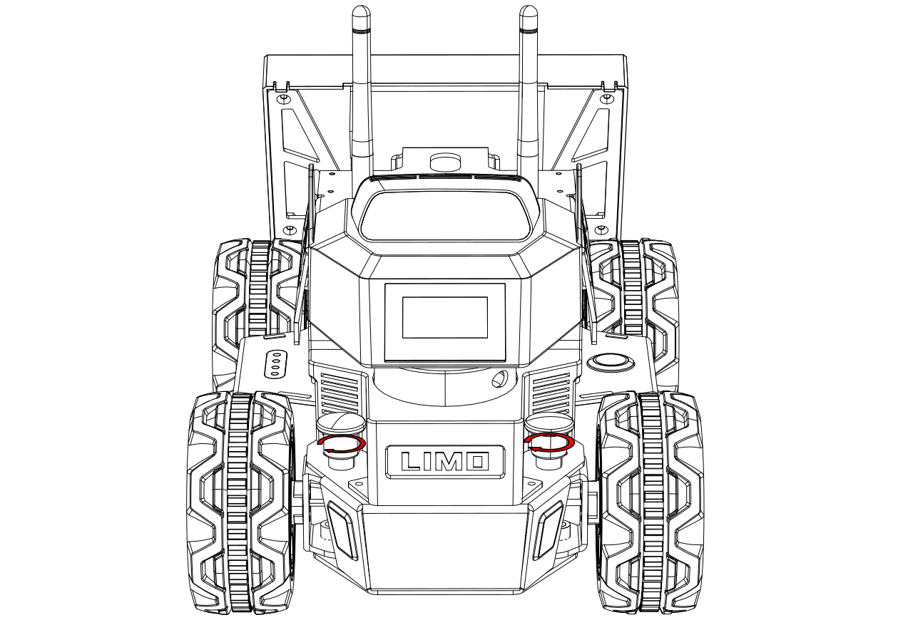

Steering Modes
Overview
| Latch Status | Indicator Color | Current Steering Mode or Status |
|---|---|---|
| Any | Blinking Red | Low Battery or Main Controller Alarm |
| Solid Red | LIMO Stopped Due to Error | |
| Inserted | Yellow | Four-wheel Differential Drive or Tracked |
| Blue | Mecanum | |
| Released | Green | Ackermann |
| Ackermann | Four-wheel Differential | Tracked | Mecanum |
|---|---|---|---|

|

|

|
- Ackermann: The Ackermann steering geometry is a geometric arrangement of linkages in the steering of a car or other vehicle designed to solve the problem of wheels on the inside and outside of a turn needing to trace out circles of different radii. [Wikipedia]
- Four-wheel Differential: A differential wheeled robot is a mobile robot whose movement is based on two separately driven wheels placed on either side of the robot body. It can thus change its direction by varying the relative rate of rotation of its wheels and hence does not require an additional steering motion. Robots with such a drive typically have one or more caster wheels to prevent the vehicle from tilting. [Wikipedia]
- Tracked: Tank steering systems allow a tank, or other continuous track vehicle, to turn. Because the tracks cannot be angled relative to the hull (in any operational design), steering must be accomplished by speeding one track up, slowing the other down (or reversing it), or a combination of both. [Wikipedia]
- Mecanum: The mecanum wheel is an omnidirectional wheel design for a land-based vehicle to move in any direction. [Wikipedia]
Switching Steering Modes
Switching to Ackermann
Pull up the latches on both sides, turn 30 degrees clockwise to make the longer line on both latches points to the front of the vehicle body, and then they will be stuck. When the vehicle light turns solid green, the robot is in Ackermann steering mode.

|

|
Switching to Differential
Pull up the latches on both sides, turn 30 degrees clockwise to make the shorter line on the two latches points to the front of the vehicle body. At this point, it is in insertion state. Fine-tune the tire angle to align the hole so that the latch is inserted. When the vehicle light turns solid yellow, the the robot is in Four-wheel Differential steering mode.
|  |
Switching to Tracked
With the robot in four-wheel differential mode, the track can be put on directly. It is recommended to put the track on the rear wheel with small space first.
Warning
When using Tracked mode, please lift the doors on both sides to prevent scratches.

Switching to Mecanum
First remove the hubcaps and tires, leaving only the hub motors. Then, ensuring that the small roller of each Mecanum wheel is facing the center of the body, install the Mecanum wheel with the included M3*5 screws.

|

|
Note
When switching to the Mecanum steering mode, make sure that each Mecanum wheel is installed at the angle shown above in the third picture.